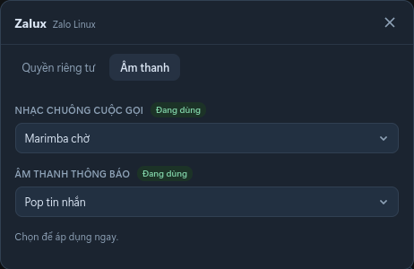

Gọi điện native
Voice, video và gọi nhóm qua zcall-native + PulseAudio/Opus. Không helper Windows, không Wine.
Đã test UbuntuPulseAudioOpus
Zalo cho Linux
Client Zalo macOS chính thức, chuyển sang chạy native trên Linux Electron. Giao diện quen thuộc, gọi điện thật, cài trong một lệnh.

Thiếu gọi điện, thông báo chậm
Nặng, giật, call chập chờn
UI macOS, call native, không Wine
Tính năng
Không phải bản mod nhiều nút. Là Zalo gốc, được làm cho Linux.
Voice, video và gọi nhóm qua zcall-native + PulseAudio/Opus. Không helper Windows, không Wine.
Chat, file, ảnh, sticker, reaction, ghim — giữ nguyên trải nghiệm gốc.
Ẩn “đang soạn tin”, “đã nhận”, “đã xem” chỉ bằng một switch.
Nghe thử play/pause từng mẫu, chọn là áp dụng ngay.
Call đến căn giữa, lọc camera IR, ẩn titlebar thừa, bỏ tên tài khoản.
Cài không cần root, hoặc đóng gói hệ thống. Update theo từng bản Zalo.
Gọi điện
Engine native lo signalling, SRTP và audio; UI vẫn là Zalo. Voice, video và gọi nhóm đã được thử trên Ubuntu 26.04, cả Wayland lẫn X11.
Cài đặt
Tải repo, lấy AppImage Original mới nhất từ upstream, áp patch và cài vào ~/.local.
curl -fsSL https://raw.githubusercontent.com/todo-laterx/zalux/main/scripts/bootstrap.sh | bashgit clone https://github.com/todo-laterx/zalux.git
cd zalux
./scripts/install-latest.shpackaging/deb/build.sh /path/to/Zalo.AppImage 26.10.20
sudo apt install ./dist/zalux_26.10.20_amd64.debCần python3, libopus0, pulseaudio-utils và thư viện Electron cơ bản. Xem DEPENDENCIES.md.
Ủng hộ
Zalux miễn phí. Nếu nó giúp bạn bớt vướng khi làm việc trên Linux, bạn có thể mời mình một ly cà phê để có thêm thời gian theo bản Zalo mới, thử call và sửa lỗi.
Không bắt buộc. Dùng và chia sẻ cũng là ủng hộ.